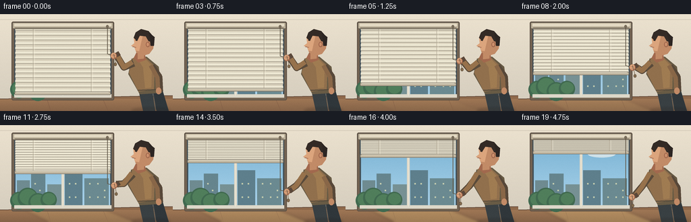
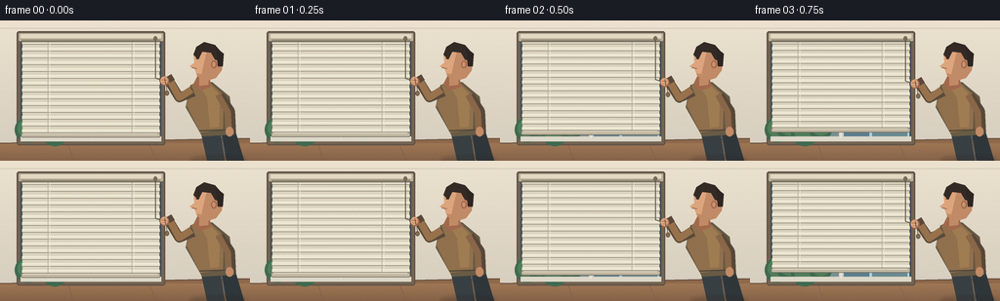

CODING AGENTS AS PIXEL WORLD MODELS
traex/GPT-5.6-Sol · motion_rationality_0055
点击播放 · 原生 RGB 像素
逐轮保存的候选
回放视频、检查图与代码变化。
每份候选均可单独播放。实际图片检查记录在下方工具轨迹中。
候选 01播放与检查图
点击播放 · 原生 RGB 像素

展开代码变化
--- 上一保存版本
+++ 本次保存版本
@@ -0,0 +1,190 @@
+from pathlib import Path
+import math
+import numpy as np
+from PIL import Image, ImageDraw, ImageFilter
+import artifact_io
+
+W,H,N = 256,144,20
+S=4
+rng=np.random.default_rng(55)
+
+# fixed, fine wall texture so the room feels illustrated rather than flat
+wall_noise=rng.normal(0,1.25,(H,W,1))
+
+def sc(v): return int(round(v*S))
+def box(t): return tuple(sc(x) for x in t)
+def pts(seq): return [(sc(x),sc(y)) for x,y in seq]
+
+def frame_at(i):
+ t=i/(N-1)
+ # physically monotonic lift, with gentle acceleration and deceleration
+ p=t*t*(3-2*t)
+ im=Image.new('RGB',(W*S,H*S),(224,213,192))
+ d=ImageDraw.Draw(im)
+
+ # warm interior wall gradient
+ for y in range(H*S):
+ yy=y/(H*S)
+ col=(int(236-24*yy),int(226-22*yy),int(207-18*yy))
+ d.line([(0,y),(W*S,y)],fill=col)
+ # ceiling seam and floor
+ d.line(pts([(0,8),(256,8)]), fill=(207,197,180), width=sc(.7))
+ d.polygon(pts([(0,126),(256,121),(256,144),(0,144)]),fill=(143,105,75))
+ for y in range(sc(126),sc(144)):
+ a=(y/S-126)/18
+ col=(int(159-26*a),int(119-20*a),int(85-13*a))
+ d.line([(0,y),(W*S,y)],fill=col)
+ d.line(pts([(0,126),(256,121)]),fill=(102,77,61),width=sc(1.2))
+ # subtle boards
+ d.line(pts([(69,125),(75,144)]),fill=(126,91,69),width=sc(.5))
+ d.line(pts([(151,123),(160,144)]),fill=(126,91,69),width=sc(.5))
+ d.line(pts([(224,122),(239,144)]),fill=(126,91,69),width=sc(.5))
+
+ # growing sunlight on the floor as blinds open
+ if p>0.03:
+ ov=Image.new('RGBA',im.size,(0,0,0,0)); od=ImageDraw.Draw(ov)
+ alpha=int(58*p)
+ od.polygon(pts([(31,123),(145,121),(201,144),(72,144)]),fill=(255,221,139,alpha))
+ ov=ov.filter(ImageFilter.GaussianBlur(sc(2.0)))
+ im=Image.alpha_composite(im.convert('RGBA'),ov).convert('RGB'); d=ImageDraw.Draw(im)
+
+ # window frame and deep inner reveal
+ d.rounded_rectangle(box((17,11,169,128)),radius=sc(2.5),fill=(115,99,82),outline=(91,78,66),width=sc(1))
+ d.rectangle(box((21,14,165,124)),fill=(66,79,86))
+ # entire outdoor view, revealed from the bottom as the blind rises
+ # sky gradient
+ for yy in range(sc(16),sc(123)):
+ rel=(yy/S-16)/107
+ col=(int(119+52*rel),int(177+35*rel),int(210+26*rel))
+ d.line([(sc(23),yy),(sc(163),yy)],fill=col)
+ # distant clouds
+ d.ellipse(box((31,28,70,40)),fill=(210,228,235))
+ d.ellipse(box((47,24,89,40)),fill=(216,233,240))
+ d.ellipse(box((103,38,144,48)),fill=(206,225,233))
+ # far city silhouettes
+ d.rectangle(box((25,82,44,123)),fill=(111,139,145))
+ d.rectangle(box((46,72,67,123)),fill=(102,133,142))
+ d.rectangle(box((70,88,91,123)),fill=(119,145,148))
+ d.rectangle(box((96,67,122,123)),fill=(94,127,140))
+ d.rectangle(box((125,79,161,123)),fill=(107,138,145))
+ # windows, static highlights
+ for x in [51,58,102,111,132,144,154]:
+ for y in [86,96,106]:
+ if (x+y)%3:
+ d.rectangle(box((x,y,x+2,y+2)),fill=(196,205,175))
+ # treetop low left
+ for cx,cy,r in [(28,112,13),(41,108,15),(56,115,14),(72,111,12)]:
+ d.ellipse(box((cx-r,cy-r,cx+r,cy+r)),fill=(65,106,80))
+ d.ellipse(box((cx-r+3,cy-r+2,cx+r-2,cy+r-5)),fill=(80,126,91))
+
+ # thin window mullions, visible below/through blinds
+ d.rectangle(box((91,15,95,124)),fill=(220,215,200))
+ d.rectangle(box((21,119,165,124)),fill=(221,216,201))
+ d.line(pts([(93,16),(93,121)]), fill=(245,239,219),width=sc(.7))
+
+ # moving blind: lower rail rises from 117 to 39. Slats compress realistically at top
+ rail_y=117 - 77*p
+ top=19
+ # blind softly occludes outside area above its rising lower edge
+ d.rectangle(box((23,top,163,rail_y)),fill=(219,211,190))
+ # slats maintain count, their pitch shrinks as they pile together
+ slat_count=14
+ pitch=(rail_y-top)/slat_count
+ for k in range(slat_count):
+ y=top+(k+0.52)*pitch
+ # each slat has a highlighted face and shaded lower lip
+ thick=max(1.1,min(3.2,pitch*.72))
+ d.rectangle(box((22.5,y-thick*.55,163.5,y+thick*.44)),fill=(235,229,208))
+ d.line(pts([(23,y-thick*.55),(163,y-thick*.55)]),fill=(250,246,229),width=sc(.55))
+ d.line(pts([(23,y+thick*.48),(163,y+thick*.48)]),fill=(151,143,127),width=sc(.8))
+ # lift tapes travel with the blinds
+ for x in (49,135):
+ d.line(pts([(x,19),(x,rail_y)]),fill=(184,175,155),width=sc(.8))
+ d.line(pts([(x+2,19),(x+2,rail_y)]),fill=(241,235,215),width=sc(.45))
+ # substantial bottom rail makes the upward motion unmistakable
+ d.rounded_rectangle(box((21.5,rail_y-2,164,rail_y+3)),radius=sc(1.4),fill=(196,186,164),outline=(119,111,98),width=sc(.7))
+ d.line(pts([(24,rail_y-1.1),(161,rail_y-1.1)]),fill=(245,239,218),width=sc(.7))
+
+ # header/cornice in front
+ d.rounded_rectangle(box((18,12,168,22)),radius=sc(2),fill=(188,176,153),outline=(102,93,80),width=sc(1))
+ d.rectangle(box((21,14,165,18)),fill=(228,218,196))
+ d.line(pts([(22,20),(164,20)]),fill=(127,117,101),width=sc(1))
+
+ # pull cord: fixed pulley, taut diagonal strand follows the descending hand
+ hand_x=169.0 + 0.8*math.sin(t*math.pi)
+ hand_y=62 + 45*p
+ d.ellipse(box((157,16,161,21)),fill=(120,108,90))
+ d.line(pts([(159,20),(159,hand_y-3),(hand_x-1,hand_y)]),fill=(98,88,72),width=sc(1.05))
+ # second free strand / tassel below fist sways subtly
+ sway=1.3*math.sin(t*math.pi*1.5)
+ d.line(pts([(hand_x+1,hand_y+2),(hand_x+2+sway,hand_y+12)]),fill=(109,95,76),width=sc(.85))
+ d.ellipse(box((hand_x-0.2+sway,hand_y+10,hand_x+4+sway,hand_y+15)),fill=(131,108,78),outline=(88,73,60),width=sc(.5))
+
+ # PERSON, right side, standing in profile and looking at the moving blind
+ lean=1.1*p
+ # rear leg / trousers
+ d.polygon(pts([(205,112),(225,111),(230,144),(212,144)]),fill=(57,64,67))
+ d.polygon(pts([(225,111),(241,114),(250,144),(232,144)]),fill=(48,55,59))
+ d.line(pts([(227,117),(231,142)]),fill=(83,88,87),width=sc(.8))
+ # torso shadow then sweater
+ torso=[(195-lean,66),(217,63),(235,78),(240,117),(207,119),(190-lean,89)]
+ d.polygon(pts(torso),fill=(104,91,69))
+ d.polygon(pts([(197-lean,65),(215,64),(229,77),(228,112),(205,115),(191-lean,87)]),fill=(145,112,77))
+ # warm sweater highlight and hem
+ d.polygon(pts([(204,67),(216,67),(225,77),(224,109),(215,110),(212,79)]),fill=(160,124,82))
+ d.line(pts([(204,113),(231,112)]),fill=(79,71,59),width=sc(1.4))
+ # neck
+ skin=(194,139,103); skin_light=(220,165,125); skin_shadow=(162,105,78)
+ d.polygon(pts([(202-lean,57),(214,55),(216,68),(205,72),(198-lean,65)]),fill=skin_shadow)
+ d.polygon(pts([(204-lean,55),(214,55),(213,66),(204-lean,67)]),fill=skin)
+ # head profile facing LEFT, nose silhouette readable
+ head=[(205-lean,27),(219,27),(228,37),(227,51),(221,59),(211,62),(202-lean,57),(199-lean,49),(194-lean,47),(199-lean,43),(198-lean,34)]
+ d.polygon(pts(head),fill=skin)
+ d.polygon(pts([(198-lean,34),(205-lean,29),(212,29),(206,55),(201-lean,54),(199-lean,48),(194-lean,47),(199-lean,43)]),fill=skin_light)
+ # ear
+ d.ellipse(box((216,41,222,49)),fill=skin_shadow)
+ d.ellipse(box((217.2,42.2,220.5,47.6)),fill=(205,145,109))
+ # hair cap and back
+ hair=(52,43,38)
+ d.polygon(pts([(198-lean,35),(201-lean,27),(209,22),(220,25),(227,33),(226,42),(220,40),(216,33),(207,32),(203-lean,40)]),fill=hair)
+ d.polygon(pts([(220,27),(229,34),(228,47),(223,47),(222,36)]),fill=(45,38,35))
+ # face details, eye aimed at window
+ d.line(pts([(200.5-lean,39),(204-lean,38.5)]),fill=(72,53,43),width=sc(.75))
+ d.ellipse(box((201.0-lean,38.1,202.3-lean,39.4)),fill=(35,32,29))
+ d.line(pts([(196.2-lean,48.4),(201.5-lean,49.2)]),fill=(127,76,61),width=sc(.65))
+
+ # arm reaching to cord: shoulder -> elbow -> fist, descending over time
+ shoulder=(198-lean,73)
+ elbow=(183.5-0.8*p,79+13*p)
+ # back/shadow stroke then sleeve stroke gives a smooth articulated arm
+ d.line(pts([shoulder,elbow,(172,hand_y-2)]),fill=(90,75,59),width=sc(10),joint='curve')
+ d.line(pts([(196-lean,71),elbow,(173,hand_y-2)]),fill=(151,114,76),width=sc(7.2),joint='curve')
+ # sleeve cuff
+ d.line(pts([(177,hand_y-4),(172,hand_y-1)]),fill=(91,72,58),width=sc(7))
+ # fist wraps visibly around cord
+ d.ellipse(box((hand_x-5.2,hand_y-4.7,hand_x+4.0,hand_y+4.8)),fill=skin_shadow)
+ d.ellipse(box((hand_x-4.7,hand_y-4.5,hand_x+2.7,hand_y+3.4)),fill=skin_light)
+ d.line(pts([(hand_x-3.8,hand_y-1.3),(hand_x+1.7,hand_y-.8)]),fill=(153,94,71),width=sc(.65))
+ d.line(pts([(hand_x-3,hand_y+1.2),(hand_x+1,hand_y+1.6)]),fill=(153,94,71),width=sc(.55))
+ # redraw cord segment crossing fist to make grip explicit
+ d.line(pts([(hand_x-.5,hand_y-3),(hand_x+.6,hand_y+3)]),fill=(91,78,63),width=sc(.75))
+
+ # relaxed rear arm at side
+ d.line(pts([(225,77),(236,93),(237,115)]),fill=(88,72,57),width=sc(9),joint='curve')
+ d.line(pts([(223,76),(233,94),(234,113)]),fill=(137,103,72),width=sc(6.5),joint='curve')
+ d.ellipse(box((231,109,239,119)),fill=skin)
+
+ # soft contact shadows
+ sh=Image.new('RGBA',im.size,(0,0,0,0)); sd=ImageDraw.Draw(sh)
+ sd.ellipse(box((195,139,252,147)),fill=(46,34,28,55))
+ sh=sh.filter(ImageFilter.GaussianBlur(sc(2)))
+ im=Image.alpha_composite(im.convert('RGBA'),sh).convert('RGB')
+
+ # downsample and apply delicate fixed grain
+ im=im.resize((W,H),Image.Resampling.LANCZOS)
+ arr=np.asarray(im).astype(np.float32)
+ arr += wall_noise*0.35
+ return np.clip(arr,0,255).astype(np.uint8)
+
+frames=np.stack([frame_at(i) for i in range(N)],axis=0)
+artifact_io.save(frames,Path(__file__).resolve().parent)
可观测工具轨迹
实际执行的命令与返回图片。
命令 1exit 0
/bin/bash -lc "cat prompt.txt && printf '\\n---RULES---\\n' && cat GENERATION_RULES.md && printf '\\n---SPEC---\\n' && cat task_spec.json"
命令 2exit 0
/bin/bash -lc "find . -maxdepth 2 -type f -printf '%p\\n' | sort"
命令 3exit 0
/bin/bash -lc 'cat artifact_io.py'
命令 4exit 0
/bin/bash -lc "cat > generate.py <<'PY'
from pathlib import Path
import math
import numpy as np
from PIL import Image, ImageDraw, ImageFilter
import artifact_io
W,H,N = 256,144,20
S=4
rng=np.random.default_rng(55)
# fixed, fine wall texture so the room feels illustrated rather than flat
wall_noise=rng.normal(0,1.25,(H,W,1))
def sc(v): return int(round(v*S))
def box(t): return tuple(sc(x) for x in t)
def pts(seq): return [(sc(x),sc(y)) for x,y in seq]
def frame_at(i):
t=i/(N-1)
# physically monotonic lift, with gentle acceleration and deceleration
p=t*t*(3-2*t)
im=Image.new('RGB',(W*S,H*S),(224,213,192))
d=ImageDraw.Draw(im)
# warm interior wall gradient
for y in range(H*S):
yy=y/(H*S)
col=(int(236-24*yy),int(226-22*yy),int(207-18*yy))
d.line([(0,y),(W*S,y)],fill=col)
# ceiling seam and floor
d.line(pts([(0,8),(256,8)]), fill=(207,197,180), width=sc(.7))
d.polygon(pts([(0,126),(256,121),(256,144),(0,144)]),fill=(143,105,75))
for y in range(sc(126),sc(144)):
a=(y/S-126)/18
col=(int(159-26*a),int(119-20*a),int(85-13*a))
d.line([(0,y),(W*S,y)],fill=col)
d.line(pts([(0,126),(256,121)]),fill=(102,77,61),width=sc(1.2))
# subtle boards
d.line(pts([(69,125),(75,144)]),fill=(126,91,69),width=sc(.5))
d.line(pts([(151,123),(160,144)]),fill=(126,91,69),width=sc(.5))
d.line(pts([(224,122),(239,144)]),fill=(126,91,69),width=sc(.5))
# growing sunlight on the floor as blinds open
if p>0.03:
ov=Image.new('RGBA',im.size,(0,0,0,0)); od=ImageDraw.Draw(ov)
alpha=int(58*p)
od.polygon(pts([(31,123),(145,121),(201,144),(72,144)]),fill=(255,221,139,alpha))
ov=ov.filter(ImageFilter.GaussianBlur(sc(2.0)))
im=Image.alpha_composite(im.convert('RGBA'),ov).convert('RGB'); d=ImageDraw.Draw(im)
# window frame and deep inner reveal
d.rounded_rectangle(box((17,11,169,128)),radius=sc(2.5),fill=(115,99,82),outline=(91,78,66),width=sc(1))
d.rectangle(box((21,14,165,124)),fill=(66,79,86))
# entire outdoor view, revealed from the bottom as the blind rises
# sky gradient
for yy in range(sc(16),sc(123)):
rel=(yy/S-16)/107
col=(int(119+52*rel),int(177+35*rel),int(210+26*rel))
d.line([(sc(23),yy),(sc(163),yy)],fill=col)
# distant clouds
d.ellipse(box((31,28,70,40)),fill=(210,228,235))
d.ellipse(box((47,24,89,40)),fill=(216,233,240))
d.ellipse(box((103,38,144,48)),fill=(206,225,233))
# far city silhouettes
d.rectangle(box((25,82,44,123)),fill=(111,139,145))
d.rectangle(box((46,72,67,123)),fill=(102,133,142))
d.rectangle(box((70,88,91,123)),fill=(119,145,148))
d.rectangle(box((96,67,122,123)),fill=(94,127,140))
d.rectangle(box((125,79,161,123)),fill=(107,138,145))
# windows, static highlights
for x in [51,58,102,111,132,144,154]:
for y in [86,96,106]:
if (x+y)%3:
d.rectangle(box((x,y,x+2,y+2)),fill=(196,205,175))
# treetop low left
for cx,cy,r in [(28,112,13),(41,108,15),(56,115,14),(72,111,12)]:
d.ellipse(box((cx-r,cy-r,cx+r,cy+r)),fill=(65,106,80))
d.ellipse(box((cx-r+3,cy-r+2,cx+r-2,cy+r-5)),fill=(80,126,91))
# thin window mullions, visible below/through blinds
d.rectangle(box((91,15,95,124)),fill=(220,215,200))
d.rectangle(box((21,119,165,124)),fill=(221,216,201))
d.line(pts([(93,16),(93,121)]), fill=(245,239,219),width=sc(.7))
# moving blind: lower rail rises from 117 to 39. Slats compress realistically at top
rail_y=117 - 77*p
top=19
# blind softly occludes outside area above its rising lower edge
d.rectangle(box((23,top,163,rail_y)),fill=(219,211,190))
# slats maintain count, their pitch shrinks as they pile together
slat_count=14
pitch=(rail_y-top)/slat_count
for k in range(slat_count):
y=top+(k+0.52)*pitch
# each slat has a highlighted face and shaded lower lip
thick=max(1.1,min(3.2,pitch*.72))
d.rectangle(box((22.5,y-thick*.55,163.5,y+thick*.44)),fill=(235,229,208))
d.line(pts([(23,y-thick*.55),(163,y-thick*.55)]),fill=(250,246,229),width=sc(.55))
d.line(pts([(23,y+thick*.48),(163,y+thick*.48)]),fill=(151,143,127),width=sc(.8))
# lift tapes travel with the blinds
for x in (49,135):
d.line(pts([(x,19),(x,rail_y)]),fill=(184,175,155),width=sc(.8))
d.line(pts([(x+2,19),(x+2,rail_y)]),fill=(241,235,215),width=sc(.45))
# substantial bottom rail makes the upward motion unmistakable
d.rounded_rectangle(box((21.5,rail_y-2,164,rail_y+3)),radius=sc(1.4),fill=(196,186,164),outline=(119,111,98),width=sc(.7))
d.line(pts([(24,rail_y-1.1),(161,rail_y-1.1)]),fill=(245,239,218),width=sc(.7))
# header/cornice in front
d.rounded_rectangle(box((18,12,168,22)),radius=sc(2),fill=(188,176,153),outline=(102,93,80),width=sc(1))
d.rectangle(box((21,14,165,18)),fill=(228,218,196))
d.line(pts([(22,20),(164,20)]),fill=(127,117,101),width=sc(1))
# pull cord: fixed pulley, taut diagonal strand follows the descending hand
hand_x=169.0 + 0.8*math.sin(t*math.pi)
hand_y=62 + 45*p
d.ellipse(box((157,16,161,21)),fill=(120,108,90))
d.line(pts([(159,20),(159,hand_y-3),(hand_x-1,hand_y)]),fill=(98,88,72),width=sc(1.05))
# second free strand / tassel below fist sways subtly
sway=1.3*math.sin(t*math.pi*1.5)
d.line(pts([(hand_x+1,hand_y+2),(hand_x+2+sway,hand_y+12)]),fill=(109,95,76),width=sc(.85))
d.ellipse(box((hand_x-0.2+sway,hand_y+10,hand_x+4+sway,hand_y+15)),fill=(131,108,78),outline=(88,73,60),width=sc(.5))
# PERSON, right side, standing in profile and looking at the moving blind
lean=1.1*p
# rear leg / trousers
d.polygon(pts([(205,112),(225,111),(230,144),(212,144)]),fill=(57,64,67))
d.polygon(pts([(225,111),(241,114),(250,144),(232,144)]),fill=(48,55,59))
d.line(pts([(227,117),(231,142)]),fill=(83,88,87),width=sc(.8))
# torso shadow then sweater
torso=[(195-lean,66),(217,63),(235,78),(240,117),(207,119),(190-lean,89)]
d.polygon(pts(torso),fill=(104,91,69))
d.polygon(pts([(197-lean,65),(215,64),(229,77),(228,112),(205,115),(191-lean,87)]),fill=(145,112,77))
# warm sweater highlight and hem
d.polygon(pts([(204,67),(216,67),(225,77),(224,109),(215,110),(212,79)]),fill=(160,124,82))
d.line(pts([(204,113),(231,112)]),fill=(79,71,59),width=sc(1.4))
# neck
skin=(194,139,103); skin_light=(220,165,125); skin_shadow=(162,105,78)
d.polygon(pts([(202-lean,57),(214,55),(216,68),(205,72),(198-lean,65)]),fill=skin_shadow)
d.polygon(pts([(204-lean,55),(214,55),(213,66),(204-lean,67)]),fill=skin)
# head profile facing LEFT, nose silhouette readable
head=[(205-lean,27),(219,27),(228,37),(227,51),(221,59),(211,62),(202-lean,57),(199-lean,49),(194-lean,47),(199-lean,43),(198-lean,34)]
d.polygon(pts(head),fill=skin)
d.polygon(pts([(198-lean,34),(205-lean,29),(212,29),(206,55),(201-lean,54),(199-lean,48),(194-lean,47),(199-lean,43)]),fill=skin_light)
# ear
d.ellipse(box((216,41,222,49)),fill=skin_shadow)
d.ellipse(box((217.2,42.2,220.5,47.6)),fill=(205,145,109))
# hair cap and back
hair=(52,43,38)
d.polygon(pts([(198-lean,35),(201-lean,27),(209,22),(220,25),(227,33),(226,42),(220,40),(216,33),(207,32),(203-lean,40)]),fill=hair)
d.polygon(pts([(220,27),(229,34),(228,47),(223,47),(222,36)]),fill=(45,38,35))
# face details, eye aimed at window
d.line(pts([(200.5-lean,39),(204-lean,38.5)]),fill=(72,53,43),width=sc(.75))
d.ellipse(box((201.0-lean,38.1,202.3-lean,39.4)),fill=(35,32,29))
d.line(pts([(196.2-lean,48.4),(201.5-lean,49.2)]),fill=(127,76,61),width=sc(.65))
# arm reaching to cord: shoulder -> elbow -> fist, descending over time
shoulder=(198-lean,73)
elbow=(183.5-0.8*p,79+13*p)
# back/shadow stroke then sleeve stroke gives a smooth articulated arm
d.line(pts([shoulder,elbow,(172,hand_y-2)]),fill=(90,75,59),width=sc(10),joint='curve')
d.line(pts([(196-lean,71),elbow,(173,hand_y-2)]),fill=(151,114,76),width=sc(7.2),joint='curve')
# sleeve cuff
d.line(pts([(177,hand_y-4),(172,hand_y-1)]),fill=(91,72,58),width=sc(7))
# fist wraps visibly around cord
d.ellipse(box((hand_x-5.2,hand_y-4.7,hand_x+4.0,hand_y+4.8)),fill=skin_shadow)
d.ellipse(box((hand_x-4.7,hand_y-4.5,hand_x+2.7,hand_y+3.4)),fill=skin_light)
d.line(pts([(hand_x-3.8,hand_y-1.3),(hand_x+1.7,hand_y-.8)]),fill=(153,94,71),width=sc(.65))
d.line(pts([(hand_x-3,hand_y+1.2),(hand_x+1,hand_y+1.6)]),fill=(153,94,71),width=sc(.55))
# redraw cord segment crossing fist to make grip explicit
d.line(pts([(hand_x-.5,hand_y-3),(hand_x+.6,hand_y+3)]),fill=(91,78,63),width=sc(.75))
# relaxed rear arm at side
d.line(pts([(225,77),(236,93),(237,115)]),fill=(88,72,57),width=sc(9),joint='curve')
d.line(pts([(223,76),(233,94),(234,113)]),fill=(137,103,72),width=sc(6.5),joint='curve')
d.ellipse(box((231,109,239,119)),fill=skin)
# soft contact shadows
sh=Image.new('RGBA',im.size,(0,0,0,0)); sd=ImageDraw.Draw(sh)
sd.ellipse(box((195,139,252,147)),fill=(46,34,28,55))
sh=sh.filter(ImageFilter.GaussianBlur(sc(2)))
im=Image.alpha_composite(im.convert('RGBA'),sh).convert('RGB')
# downsample and apply delicate fixed grain
im=im.resize((W,H),Image.Resampling.LANCZOS)
arr=np.asarray(im).astype(np.float32)
arr += wall_noise*0.35
return np.clip(arr,0,255).astype(np.uint8)
frames=np.stack([frame_at(i) for i in range(N)],axis=0)
artifact_io.save(frames,Path(__file__).resolve().parent)
PY
python generate.py"命令 5exit 0
/bin/bash -lc "python - <<'PY'
import numpy as np
from pathlib import Path
p=np.load('pixels.npz')['pixels']
print('pixels',p.shape,p.dtype,'frames',len(list(Path('frames').glob('*.png'))))
print('artifacts',[(x.name,x.stat().st_size) for x in [Path('pixels.npz'),Path('index.html'),Path('inspection.png')]])
PY"视觉工具实际返回图片 1

视觉工具实际返回图片 2

保存候选 1 份；完成命令 5 次；可验证图片返回 2 张。原始 API 响应与完整日志保留在本地。